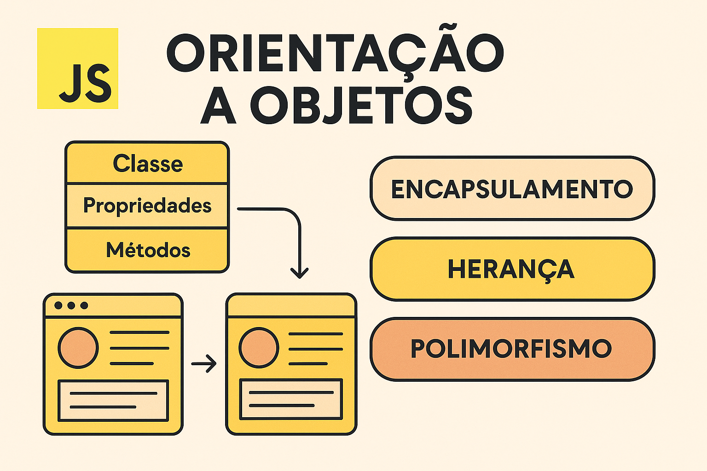

Aprenda os conceitos fundamentais de orientação a objetos em JavaScript.
Orientação a objetos em JavaScript é um paradigma de programação baseado no conceito de objetos, que representam entidades do mundo real com propriedades (dados) e métodos (ações). Esse estilo de programação permite organizar o código de forma mais modular e reutilizável. JavaScript suporta orientação a objetos por meio de protótipos e, a partir do ES6, também por meio de classes. Os principais princípios da orientação a objetos são encapsulamento (ocultação dos detalhes internos), herança (reutilização de código por meio de classes derivadas) e polimorfismo (capacidade de diferentes objetos responderem de forma específica a uma mesma operação).
A orientação a objetos em JavaScript é um paradigma que organiza o código em torno de objetos, facilitando a criação de sistemas mais estruturados e reutilizáveis. Um objeto representa uma entidade com propriedades e comportamentos. Classes funcionam como moldes para criar objetos semelhantes, e cada objeto criado é chamado de instância. A herança permite que uma classe herde características de outra, promovendo a reutilização de código. O encapsulamento protege os dados internos dos objetos, permitindo acesso apenas por meio de métodos definidos. Já o polimorfismo possibilita que métodos sejam redefinidos em classes filhas, adaptando o comportamento conforme o contexto. Esses conceitos tornam o JavaScript mais eficiente para o desenvolvimento de aplicações complexas e organizadas.

Temos um objeto criado em:
Nome:
Idade:
Profissão:
Temos outro exemplo em:
Nome:
Especie:
classe:
familia: